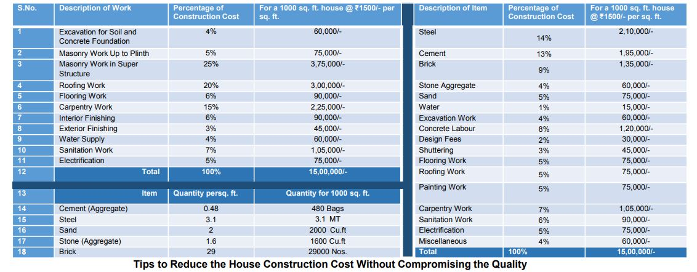

Construction cost of a residential building depends on several factors like location, size, design, material used, and labour costs, with costs differing across towns/villages. Typically, labour accounts for 20–35% of the total cost, but for exceptional work, this can rise to 40%. The labour-to-building cost ratio is approximately 30:70 or 40:60. Understanding these financial aspects is essential for turning your dream home into reality. The ratio of materials, labour, and additional expenses is 70:25:05. Estimating costs at different stages of construction can be done based on the phase and percentage of overall expenses, as given below.
Tips to Reduce the House Construction Cost Without Compromising the Quality
• Proper Planning and Design: Focus on detailed planning to avoid changes and rework during construction. Optimize layout and consider factors like natural lighting, ventilation, and energy efficiency to ensure efficient use of resources and minimize wastage.
• Material Selection: Choose durable, cost-effective materials. Compare prices from different suppliers, explore alternatives that meet your requirements, and consider locally available alternatives to cut costs without sacrificing quality.
• Manage the Project Efficiently: Manage timelines, materials, and labor effectively. Good scheduling and timely procurement of materials prevent delays and cost overruns.